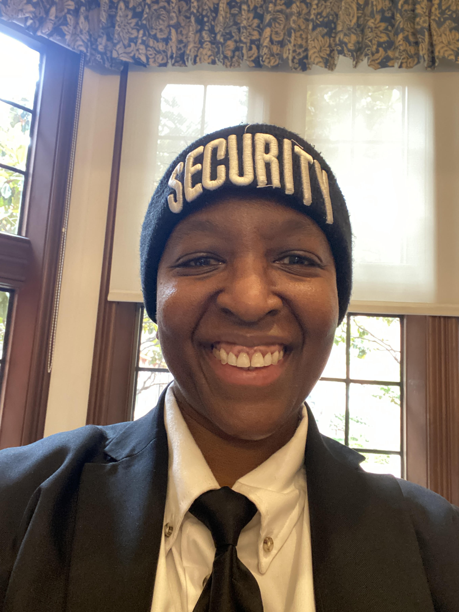

Hello, Heritage on the Marina. I’m Tasha Campbell, the smiling security officer that you know from the past year and a half 👋🏾😊. I wanted to take a moment to share a little more about me and thank you with an original poem as I leave for a new and better job opportunity.
A Special Thanks to Theo Armour, who inspired me with his thoughtful questions and encouragement to keep moving and do something fun. When the late Martha Nell Beatty was alive, he told me to connect with her so she could interview me for a profile in the Heritage Happenings newsletter. I always enjoyed reading it and was saddened by her passing in August. She was a sweet lady. Rest in Peace, Martha.
I will try to keep this short and sweet. Haha. I was born 55 years ago to my loving parents, William “Bill” Campbell and Joan Campbell. Dad worked for 20+ years for the Oakland Housing Authority as a manager for section 8 housing units near the Oakland Coliseum Bart Station. It’s now been redeveloped into affordable housing called Coliseum Place. Before her retirement, Mom worked for 20+ years at Owens-Illinois, a large maker of glass containers for the food, beverage, and pharmaceutical industries. I get my beautiful smile from and a positive spirit from her. Both of my parents have passed, my dad in 1999 and my mom in 2012. They are both resting in peace now. Both were active in the church, dad in the men’s choir and mom in the kitchen and making care packages for the homeless. In 1984, they bought our 3-bedroom family home in Oakland. I still live there, with three housemates/tenants, that I rent two of the rooms and the garage to. So, when I'm not at work holding it down, keeping it organized and Zen, I'm at home as a live-in landlord, doing the same. Lol.
There’s so much in my heart
That I want to say
So I’ll say it this
Creatively and poetically
Starting collectively
What it means to me
It means heart
Humor and community
From the back of the kitchen
To the Health Center
And all the fun staff
The Heritage felt
Like a second home full of
Love and laughs
Daily activities,
Happy birthdays and happy hours
Smiles and conversations
Made me feel inspired
First Thank you to CEO Mary
Who leads with compassion and care
And the beautiful curly
White head of hair (lol)
And to Patti and Bob
From sales for their quick wit
And Praveen in HR
For sharing the best insights and snacks
Thank you to Chip and Cortez
In Transportation
The Steady Eddies
In all situations
Hector
Thank for the opportunity to work
Fulltime in the mornings
And thanks for the encouragement to take
The position and own it
Thanks to Sean, Ed,
And Mr. “A-Team” Archie
It was fun working with
You all of you guys daily
Eileen, Brenda, and Anna
In the front office
I always enjoyed your smarts
And conversations
To the nursing staff in the health clinic
Working hard all day
Much respect to
You Always
Mina, Rosalina
Anna, Olive and Meron
Michelle, Rizz, Candy
Wendy and Francis
Of course Larry
For your fun personality
And Jason for your
Laid-back energy
Dining Room, I see you
Thank you for the good food
And Good music
When I would walk through
Shout out to Alex, Sylvie, Angie,
Mike, Tina, Assad and the crew
I have to acknowledge the gentlemen
Especially Tony Hanley
For his big, warm hugs
When he would see me
Shout out to
Gil, Alvin, and
The Physical Therapists, PTs
And Carl the tech guy in IT
Vada - I love the different colorful hair styles!
Martha NKhoma - Love the warm smile!
Sabrina- Always enjoyed our chat time
Gary, Rod, Fred
Jim, Tom, and Pat too
Bob, Patrick, Atilio,
Nice talking to you all too
To the ladies at the Heritage
Thank you for your support and smiles
Especially Linda Hanley
For your hugs and kind words
Thank you To Maureen, Christine,
Michelle and Cooby,
Rita, Martha, Katie
Kay, Betty, and Sisi
Joan Wentker
For her enthusiasm
Talking about jigsaw puzzles and
The Golden State Valkyries! ⛹️♀️
Anne, Elizabeth
All of the Margarets
Nancy, Katherine
Candy, and Charmly
And before I forget,
Shout out to Roxana, Jeanne and Stephen
Who inspired me with the
Daily Calendar of Activities
Thank you to all of you
And all I haven’t mentioned
For sharing your hearts
Humor, Handshakes, and wisdom
I’ll end it right here
With my poetry
Thank you Heritage for all you mean
And will forever mean to me
After working in the security field these past 5 years, I am ready for a major change. I’m ready for a new environment and energy. I have accepted a new job in a completely new industry. I’ll be working as a Lead Service Technician for a cleaning company that specializes in office, construction, and window cleaning. I’ll be doing the office cleaning. The first client site that they told me about was Facebook, which I was excited about. There are two other potential client sites that are closer to where I live that I’m more excited about. The first company is the Clorox Company. The second is Abbott Laboratories. Both are big companies that have been around a long time and keep people healthy. After I complete training, I will have the opportunity to be hired directly with the company, with benefits after 90 days. I’m excited and ready for this new chapter, with activity, growth, and a much easier commute. Haha. In the meantime, the fun thing I’ll be doing is playing indoor volleyball on Sundays with my team at the Eureka Recreational Center in the Castro. Living the dream, as Bob would say.
Much love,
Tasha Campbell
Link to a video of Tasha's new job site at Facebook/Meta headquarters in Menlo Park.